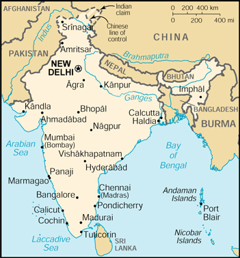

![[Country Flag of India]](../flags/in-lgflag.jpg)
| India |
|
         |
 | |
| Introduction |
Background: Nonviolent resistance to British colonialism under Mohandas GANDHI and Jawaharlal NEHRU led to independence in 1947. The subcontinent was divided into the secular state of India and the smaller Muslim state of Pakistan. A third war between the two countries in 1971 resulted in East Pakistan becoming the separate nation of Bangladesh. Fundamental concerns in India include the ongoing dispute with Pakistan over Kashmir, massive overpopulation, environmental degradation, extensive poverty, and ethnic strife, all this despite impressive gains in economic investment and output.
| Geography |
Location: Southern Asia, bordering the Arabian Sea and the Bay of Bengal, between Burma and Pakistan
Geographic coordinates: 20 00 N, 77 00 E
Map references: Asia
Area:
total:
3,287,590 sq km
land:
2,973,190 sq km
water:
314,400 sq km
Area - comparative: slightly more than one-third the size of the US
Land boundaries:
total:
14,103 km
border countries:
Bangladesh 4,053 km, Bhutan 605 km, Burma 1,463 km, China 3,380 km, Nepal 1,690 km, Pakistan 2,912 km
Coastline: 7,000 km
Maritime claims:
contiguous zone:
24 nm
continental shelf:
200 nm or to the edge of the continental margin
exclusive economic zone:
200 nm
territorial sea:
12 nm
Climate: varies from tropical monsoon in south to temperate in north
Terrain: upland plain (Deccan Plateau) in south, flat to rolling plain along the Ganges, deserts in west, Himalayas in north
Elevation extremes:
lowest point:
Indian Ocean 0 m
highest point:
Kanchenjunga 8,598 m
Natural resources: coal (fourth-largest reserves in the world), iron ore, manganese, mica, bauxite, titanium ore, chromite, natural gas, diamonds, petroleum, limestone, arable land
Land use:
arable land:
56%
permanent crops:
1%
permanent pastures:
4%
forests and woodland:
23%
other:
16% (1993 est.)
Irrigated land: 480,000 sq km (1993 est.)
Natural hazards: droughts, flash floods, severe thunderstorms common; earthquakes
Environment - current issues: deforestation; soil erosion; overgrazing; desertification; air pollution from industrial effluents and vehicle emissions; water pollution from raw sewage and runoff of agricultural pesticides; tap water is not potable throughout the country; huge and growing population is overstraining natural resources
Environment - international agreements:
party to:
Antarctic-Environmental Protocol, Antarctic Treaty, Biodiversity, Climate Change, Desertification, Endangered Species, Environmental Modification, Hazardous Wastes, Law of the Sea, Nuclear Test Ban, Ozone Layer Protection, Ship Pollution, Tropical Timber 83, Tropical Timber 94, Wetlands, Whaling
signed, but not ratified:
none of the selected agreements
Geography - note: dominates South Asian subcontinent; near important Indian Ocean trade routes
| People |
Population: 1,014,003,817 (July 2000 est.)
Age structure:
0-14 years:
34% (male 175,228,164; female 165,190,951)
15-64 years:
62% (male 324,699,562; female 301,821,383)
65 years and over:
4% (male 23,925,371; female 23,138,386) (2000 est.)
Population growth rate: 1.58% (2000 est.)
Birth rate: 24.79 births/1,000 population (2000 est.)
Death rate: 8.88 deaths/1,000 population (2000 est.)
Net migration rate: -0.08 migrant(s)/1,000 population (2000 est.)
Sex ratio:
at birth:
1.05 male(s)/female
under 15 years:
1.06 male(s)/female
15-64 years:
1.08 male(s)/female
65 years and over:
1.03 male(s)/female
total population:
1.07 male(s)/female (2000 est.)
Infant mortality rate: 64.9 deaths/1,000 live births (2000 est.)
Life expectancy at birth:
total population:
62.5 years
male:
61.89 years
female:
63.13 years (2000 est.)
Total fertility rate: 3.11 children born/woman (2000 est.)
Nationality:
noun:
Indian(s)
adjective:
Indian
Ethnic groups: Indo-Aryan 72%, Dravidian 25%, Mongoloid and other 3%
Religions: Hindu 80%, Muslim 14%, Christian 2.4%, Sikh 2%, Buddhist 0.7%, Jains 0.5%, other 0.4%
Languages:
English enjoys associate status but is the most important language for national, political, and commercial communication, Hindi the national language and primary tongue of 30% of the people, Bengali (official), Telugu (official), Marathi (official), Tamil (official), Urdu (official), Gujarati (official), Malayalam (official), Kannada (official), Oriya (official), Punjabi (official), Assamese (official), Kashmiri (official), Sindhi (official), Sanskrit (official), Hindustani (a popular variant of Hindi/Urdu spoken widely throughout northern India)
note:
24 languages each spoken by a million or more persons; numerous other languages and dialects, for the most part mutually unintelligible
Literacy:
definition:
age 15 and over can read and write
total population:
52%
male:
65.5%
female:
37.7% (1995 est.)
| Government |
Country name:
conventional long form:
Republic of India
conventional short form:
India
Data code: IN
Government type: federal republic
Capital: New Delhi
Administrative divisions: 25 states and 7 union territories*; Andaman and Nicobar Islands*, Andhra Pradesh, Arunachal Pradesh, Assam, Bihar, Chandigarh*, Dadra and Nagar Haveli*, Daman and Diu*, Delhi*, Goa, Gujarat, Haryana, Himachal Pradesh, Jammu and Kashmir, Karnataka, Kerala, Lakshadweep*, Madhya Pradesh, Maharashtra, Manipur, Meghalaya, Mizoram, Nagaland, Orissa, Pondicherry*, Punjab, Rajasthan, Sikkim, Tamil Nadu, Tripura, Uttar Pradesh, West Bengal
Independence: 15 August 1947 (from UK)
National holiday: Anniversary of the Proclamation of the Republic, 26 January (1950)
Constitution: 26 January 1950
Legal system: based on English common law; limited judicial review of legislative acts; accepts compulsory ICJ jurisdiction, with reservations
Suffrage: 18 years of age; universal
Executive branch:
chief of state:
President Kicheril Raman NARAYANAN (since 25 July 1997); Vice President Krishnan KANT (since 21 August 1997)
head of government:
Prime Minister Atal Behari VAJPAYEE (since 19 March 1998)
cabinet:
Council of Ministers appointed by the president on the recommendation of the prime minister
elections:
president elected by an electoral college consisting of elected members of both houses of Parliament and the legislatures of the states for a five-year term; election last held 14 July 1997 (next to be held NA July 2002); vice president elected by both houses of Parliament for a five-year term; election last held 16 August 1997 (next to be held NA August 2002); prime minister elected by parliamentary members of the majority party following legislative elections; election last held NA October 1999 (next to be held NA October 2004)
election results:
Kicheril Raman NARAYANAN elected president; percent of electoral college vote - NA; Krishnan KANT elected vice president; percent of Parliament vote - NA; Atal Behari VAJPAYEE elected prime minister; percent of vote - NA
Legislative branch:
bicameral Parliament or Sansad consists of the Council of States or Rajya Sabha (a body consisting of not more than 250 members, up to 12 of which are appointed by the president, the remainder are chosen by the elected members of the state and territorial assemblies; members serve six-year terms) and the People's Assembly or Lok Sabha (545 seats; 543 elected by popular vote, 2 appointed by the president; members serve five-year terms)
elections:
People's Assembly - last held 5 September through 3 October 1999 (next to be held NA 2004)
election results:
People's Assembly - percent of vote by party - BJP alliance 40.8%, Congress alliance 33.8%, other 25.4%; seats by party - BJP alliance 304, Congress alliance 134, other 105
Judicial branch: Supreme Court, judges are appointed by the president and remain in office until they reach the age of 65
Political parties and leaders: Akali Dal (representing Sikh religious community in Punjab) [Prakash Singh BADAL]; All India Anna Dravida Munnetra Kazhagam or AIADMK [J. JAYALALITHA]; All India Forward Bloc or AIFB [Prem Dutta PALIWAL (chairman), Chitta BASU (general secretary)]; Asom Gana Parishad [Prafulla Kumar MAHANTA]; Bahujan Samaj Party or BSP [Kanshi RAM]; Bharatiya Janata Party or BJP [Kushabhau THAKRE, president, L. K. ADVANI, A. B. VAJPAYEE]; Bihar Peoples Party [Anand Mohan SINGH]; Biju Janata Dal or BJD [Navin PATNAIK]; Communist Party of India or CPI [Indrajit GUPTA]; Communist Party of India/Marxist or CPI/M [Harkishan Singh SURJEET]; Communist Party of India/Marxist-Leninist or CPI/ML [Vinod MISHRA]; Congress (I) Party [Sonia GANDHI, president]; Dravida Munnetra Kazagham or DMK (a regional party in Tamil Nadu) [M. KARUNANIDHI]; Indian National League [Suliaman SAIT]; Janata Dal (Ajit) [Ajit SINGH]; Janata Dal United Party or JDU [Sharad YADAV, president, I. K. GUJRAL]; Kerala Congress (Mani faction) [K. M. MANI]; Muslim League [G. M. BANATWALA]; National Conference or NC (a regional party in Jammu and Kashmir) [Farooq ABDULLAH]; Rashtriya Janata Dal or RJD [Laloo Prasad YADAV]; Revolutionary Socialist Party or RSP [Tridip CHOWDHURY]; Samajwadi Party or SP [Mulayam Singh YADAV, president]; Samata Party or SAP (formerly Janata Dal members) [George FERNANDES]; Shiv Sena or SHS [Bal THACKERAY]; Tamil Maanila Congress [G. K. MOOPANAR]; Telugu Desam (a regional party in Andhra Pradesh) [Chandrababu NAIDU]; Trinamool Congress [Mamata BANNERJEE]
Political pressure groups and leaders: numerous religious or militant/chauvinistic organizations, including Vishwa Hindu Parishad, and Rashtriya Swayamsevak Sangh; various separatist groups seeking greater communal and/or regional autonomy
International organization participation: AfDB, AsDB, BIS, C, CCC, CP, ESCAP, FAO, G- 6, G-15, G-19, G-24, G-77, IAEA, IBRD, ICAO, ICC, ICFTU, ICRM, IDA, IEA (observer), IFAD, IFC, IFRCS, IHO, ILO, IMF, IMO, Inmarsat, Intelsat, Interpol, IOC, IOM (observer), ISO, ITU, MINURSO, MIPONUH, MONUC, NAM, OAS (observer), OPCW, PCA, SAARC, UN, UNAMSIL, UNCTAD, UNESCO, UNHCR, UNIDO, UNIFIL, UNIKOM, UNMIBH, UNMIK, UNU, UPU, WFTU, WHO, WIPO, WMO, WToO, WTrO
Diplomatic representation in the US:
chief of mission:
Ambassador Naresh CHANDRA
chancery:
2107 Massachusetts Avenue NW, Washington, DC 20008; note - Embassy located at 2536 Massachusetts Avenue NW, Washington, DC 20008
telephone:
[1] (202) 939-7000
FAX:
[1] (202) 483-3972
consulate(s) general:
Chicago, Houston, New York, and San Francisco
Diplomatic representation from the US:
chief of mission:
Ambassador Richard F. CELESTE
embassy:
Shanti Path, Chanakyapuri 110021, New Delhi
mailing address:
use embassy street address
telephone:
[91] (11) 688-9033, 611-3033
FAX:
[91] (11) 419-0017
consulate(s) general:
Calcutta, Chennai (Madras), Mumbai (Bombay)
Flag description: three equal horizontal bands of orange (top), white, and green with a blue chakra (24-spoked wheel) centered in the white band; similar to the flag of Niger, which has a small orange disk centered in the white band
| Economy |
Economy - overview: India's economy encompasses traditional village farming, modern agriculture, handicrafts, a wide range of modern industries, and a multitude of support services. More than a third of the population is too poor to be able to afford an adequate diet, and market surveys indicate that fewer than 5% of all households had an annual income equivalent to $2,300 or more in 1995-96. India's international payments position remained strong in 1999 with adequate foreign exchange reserves, reasonably stable exchange rates, and booming exports of software services. Lower production of some nonfoodgrain crops offset recovery in industrial production. Strong demand for India's high technology exports will bolster growth in 2000.
GDP: purchasing power parity - $1.805 trillion (1999 est.)
GDP - real growth rate: 5.5% (1999 est.)
GDP - per capita: purchasing power parity - $1,800 (1999 est.)
GDP - composition by sector:
agriculture:
25%
industry:
30%
services:
45% (1997)
Population below poverty line: 35% (1994 est.)
Household income or consumption by percentage share:
lowest 10%:
4.1%
highest 10%:
25% (1994)
Inflation rate (consumer prices): 6.7% (1999 est.)
Labor force: NA
Labor force - by occupation: agriculture 67%, services 18%, industry 15% (1995 est.)
Unemployment rate: NA%
Budget:
revenues:
$35.8 billion
expenditures:
$66.3 billion, including capital expenditures of $15.9 billion (FY98/99 est.)
Industries: textiles, chemicals, food processing, steel, transportation equipment, cement, mining, petroleum, machinery
Industrial production growth rate: 6% (1999 est.)
Electricity - production: 448.6 billion kWh (FY98/99 est.)
Electricity - production by source:
fossil fuel:
80.34%
hydro:
17.08%
nuclear:
2.38%
other:
0.2% (1998)
Electricity - consumption: 416.346 billion kWh (1998)
Electricity - exports: 130 million kWh (1998)
Electricity - imports: 1.575 billion kWh (1998)
Agriculture - products: rice, wheat, oilseed, cotton, jute, tea, sugarcane, potatoes; cattle, water buffalo, sheep, goats, poultry; fish
Exports: $36.3 billion (f.o.b., 1999 est.)
Exports - commodities: textile goods, gems and jewelry, engineering goods, chemicals, leather manufactures
Exports - partners: US 21%, UK 6%, Germany 6%, Hong Kong 5%, Japan 5%, UAE 4% (1998)
Imports: $50.2 billion (f.o.b., 1999 est.)
Imports - commodities: crude oil and petroleum products, machinery, gems, fertilizer, chemicals
Imports - partners: US 10%, Belgium 7%, UK 6%, Germany 6%, Saudi Arabia 6%, Japan 6% (1998)
Debt - external: $98 billion (March 1999)
Economic aid - recipient: $2.9 billion (FY98/99)
Currency: 1 Indian rupee (Re) = 100 paise
Exchange rates: Indian rupees (Rs) per US$1 - 43.552 (January 2000), 43.055 (1999), 41.259 (1998), 36.313 (1997), 35.433 (1996), 32.427 (1995)
Fiscal year: 1 April - 31 March
| Communications |
Telephones - main lines in use: 18.95 million (1999)
Telephones - mobile cellular: 1.9 million (April 1998)
Telephone system:
mediocre service; local and long distance service provided throughout all regions of the country, with services primarily concentrated in the urban areas; major objective is to continue to expand and modernize long-distance network in order to keep pace with rapidly growing number of local subscriber lines; steady improvement is taking place with the recent admission of private and private-public investors, but demand for communication services is also growing rapidly
domestic:
local service is provided by microwave radio relay and coaxial cable, with open wire and obsolete electromechanical and manual switchboard systems still in use in rural areas; starting in the 1980s, a substantial amount of digital switch gear has been introduced for local and long-distance service; long-distance traffic is carried mostly by coaxial cable and low-capacity microwave radio relay; since 1985 significant trunk capacity has been added in the form of fiber-optic cable and a domestic satellite system with 254 earth stations; mobile cellular service is provided in four metropolitan cities
international:
satellite earth stations - 8 Intelsat (Indian Ocean) and 1 Inmarsat (Indian Ocean region); nine gateway exchanges operating from Mumbai (Bombay), New Delhi, Calcutta, Chennai (Madras), Jalandhar, Kanpur, Gaidhinagar, Hyderabad, and Ernakulam; 4 submarine cables - LOCOM linking Chennai (Madras) to Penang; Indo-UAE-Gulf cable linking Mumbai (Bombay) to Al Fujayrah, UAE; India-SEA-ME-WE-3, SEA-ME-WE-2 with landing sites at Cochin and Mumbai (Bombay); Fiber-Optic Link Around the Globe (FLAG) with landing site at Mumbai (Bombay)
Radio broadcast stations: AM 153, FM 91, shortwave 68 (1998)
Radios: 116 million (1997)
Television broadcast stations: 562 (of which 82 stations have 1 kW or greater power and 480 stations have less than 1 kW of power) (1997)
Televisions: 63 million (1997)
Internet Service Providers (ISPs): 3 (1999)
| Transportation |
Railways:
total:
62,915 km (12,307 km electrified; 12,617 km double track)
broad gauge:
40,620 km 1.676-m gauge
narrow gauge:
18,501 km 1.000-m gauge; 3,794 km 0.762-m and 0.610-m gauge (1998 est.)
Highways:
total:
3,319,644 km
paved:
1,517,077 km
unpaved:
1,802,567 km (1996 est.)
Waterways: 16,180 km; 3,631 km navigable by large vessels
Pipelines: crude oil 3,005 km; petroleum products 2,687 km; natural gas 1,700 km (1995)
Ports and harbors: Calcutta, Chennai (Madras), Cochin, Jawaharal Nehru, Kandla, Mumbai (Bombay), Vishakhapatnam
Merchant marine:
total:
321 ships (1,000 GRT or over) totaling 6,647,268 GRT/11,074,025 DWT
ships by type:
bulk 124, cargo 69, chemical tanker 14, combination bulk 1, combination ore/oil 4, container 15, liquified gas 10, passenger/cargo 5, petroleum tanker 75, short-sea passenger 2, specialized tanker 2 (1999 est.)
Airports: 346 (1999 est.)
Airports - with paved runways:
total:
238
over 3,047 m:
12
2,438 to 3,047 m:
49
1,524 to 2,437 m:
84
914 to 1,523 m:
74
under 914 m:
19 (1999 est.)
Airports - with unpaved runways:
total:
108
2,438 to 3,047 m:
2
1,524 to 2,437 m:
4
914 to 1,523 m:
47
under 914 m:
55 (1999 est.)
Heliports: 16 (1999 est.)
| Military |
Military branches: Army, Navy (including naval air arm), Air Force, various security or paramilitary forces (includes Border Security Force, Assam Rifles, and Rashtriya Rifles)
Military manpower - military age: 17 years of age
Military manpower - availability:
males age 15-49:
274,679,455 (2000 est.)
Military manpower - fit for military service:
males age 15-49:
161,223,332 (2000 est.)
Military manpower - reaching military age annually:
males:
10,759,607 (2000 est.)
Military expenditures - dollar figure: $10.055 billion (FY00)
Military expenditures - percent of GDP: 2.5% (FY00)
| Transnational Issues |
Disputes - international: boundary with China in dispute; status of Kashmir with Pakistan; water-sharing problems with Pakistan over the Indus River (Wular Barrage); a portion of the boundary with Bangladesh is indefinite; dispute with Bangladesh over New Moore/South Talpatty Island
Illicit drugs: world's largest producer of licit opium for the pharmaceutical trade, but an undetermined quantity of opium is diverted to illicit international drug markets; major transit country for illicit narcotics produced in neighboring countries; illicit producer of hashish and methaqualone